<!--
============================================
; Title: RW Punk API Technical Challenge
; Author: Jason Sullenger
; Date: 11/01/2020
; Description: General Website. Calls Punk API.
; Users can filter and search.
;===========================================
-->

<div class="navMenu">
  <header>
    <mat-toolbar class="menu" role="header" color="warn">
      <mat-toolbar-row>
        
        <div class="navigation">
          <button mat-button (click)="navigateHome()">
            <mat-icon id="iconMargin">home</mat-icon>
            <span>Home</span>
          </button>

          <button mat-button (click)="navigateBeerList()">
            <mat-icon id="iconMargin">local_drink</mat-icon>
            <span>Available Beer</span>
          </button>

          <button mat-button (click)="navigateAbout()">
            <mat-icon id="iconMargin">business</mat-icon>
            <span>About Us</span>
          </button>

          <button mat-button (click)="navigateContact()">
            <mat-icon id="iconMargin">email</mat-icon>
            <span>Contact Us</span>
          </button>
        </div>
      </mat-toolbar-row>
    </mat-toolbar>
  </header>
</div>
